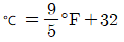
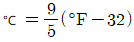
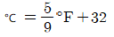
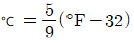
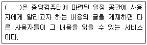

침투비파괴검사기능사 (2004-10-10 기출문제)
1과목: 침투탐상시험법(대략구분)
1. 침투탐상시험시 전처리를 위한 증기탈지법에 주로 사용되는 세척액은?
- 질산
- 황산
- 트리클렌
- 클로라이드
(정답률: 39%)

2. 침투탐상시험시 작은 불연속부를 탐지하려고 할 때 침투 시간은?
- 큰 결함을 탐지할 때 소요되는 시간보다 적게 준다.
- 큰 결함을 탐지할 때 소요되는 시간의 절반만 준다.
- 큰 결함을 탐지할 때 소요되는 시간보다 길게 준다.
- 형태에 따라 큰 결함을 탐지할 때보다 길거나 짧을 수 있다.
(정답률: 34%)
3. 다른 침투탐상시험과 비교하여 거친 표면의 탐상에 적합한 침투탐상시험은?
- 수세성 형광침투탐상시험법
- 후유화성 형광침투탐상시험법
- 용제제거성 형광침투탐상시험법
- 용제제거성 염색침투탐상시험법
(정답률: 29%)
4. 후유화성 형광침투액과 수세성 형광침투액은 외견상 구별이 곤란하다. 다음 중 간단히 구별할 수 있는 가장 좋은 방법은?
- 불태워 본다
- 만져 본다
- 소금물에 섞어 본다
- 자외선등으로 관찰해 본다
(정답률: 33%)
5. 후유화성 침투탐상시험에서 유화제를 사용하는 목적은?
- 침투제의 침투작용을 도와준다.
- 현상제의 흡출작용을 도와준다.
- 의사지시를 제거시켜 준다.
- 물로 세척이 용이하도록 도와준다.
(정답률: 74%)
6. 다음 중 용제제거성 염색침투탐상시험시 현상처리에 관한 설명으로 가장 적당한 것은?
- 휘발유만 사용한다.
- 건식현상법을 적용한다.
- 모든 현상법을 적용할 수 있다.
- 건식현상법의 적용이 곤란하다.
(정답률: 37%)
7. 침투탐상시험시 액체 현상제를 적용하는 가장 적절한 방법은?
- 분무기로 분무한다.
- 소형 분말 분무기로 뿌린다.
- 부드러운 솔로 칠한다.
- 젖은 걸레를 이용한다.
(정답률: 55%)
8. 침투탐상시험에 이용되는 원리는?
- 화학반응
- 원심력
- 관성
- 모세관현상
(정답률: 85%)
9. 화씨온도(℉)를 섭씨온도(℃)로 환산하는 공식은?




(정답률: 37%)
10. 침투탐상검사로 표면 바로 밑의 열려있지 않은 결함을 검출하는 경우의 설명으로 맞는 것은?
- 가시 염색법
- 형광 수세법
- 후유화제법에 의한 침투탐상 방법
- 어떤 방법도 표면 밑의 결함을 검출할 수 없다.
(정답률: 60%)
11. 침투시간이란 침투액을 적용한 후부터 어느 때까지의 시간인가?
- 침투액에서 꺼낼 때까지
- 배액 완료시간까지
- 유화처리나 세척처리 시작전까지
- 세척처리가 완료될 때까지
(정답률: 53%)
12. 다음 중 후유화성 침투탐상시험에서 유화제를 적용하는 시기는?
- 침투제를 사용하기 전에
- 물로 세척한 후에
- 침투시간이 어느 정도 지난 후에
- 현상시간이 어느 정도 지난 후에
(정답률: 55%)
13. 침투탐상시험시 시험체의 전처리로 가장 좋은 방법은?
- 샌드블라스팅(Sand blasting)
- 철솔질(Wire brushing)
- 연삭(Grinding)
- 증기세척(Vapor degreasing)
(정답률: 74%)
14. 시험체를 가압 또는 감압하여 일정한 시간이 지난 후 압력변화를 계측하여 누설을 검사하는 방법은?
- 기포 누설검사
- 전위차에 의한 누설검사
- 방치법에 의한 누설검사
- 암모니아 누설검사
(정답률: 24%)
15. 강자성체의 자기적 성질에서 자계의 세기를 나타내는 단위는?
- T(Teslar)
- S(Stokes)
- A/m(Ampere/meter)
- N/m(newton/meter)
(정답률: 61%)
16. 다음 중 조도(빛의 밝기)와 직접적으로 관련이 없는 비파괴검사법은?
- 방사선투과시험
- 초음파탐상시험
- 자분탐상시험
- 침투탐상시험
(정답률: 43%)
17. 맞대기 용접부의 덧살(Reinforcement)을 그라인더로 제거해서 판 형태로 만들었다. 덧살이 제거된 용접부 검사에 가장 적합한 비파괴 시험방법은?
- PT와 UT
- UT와 MT
- MT와 PT
- PT와 LT
(정답률: 32%)
18. 다음 중 수세성 형광침투제와 건식 현상제를 사용하는 침투탐상시험에서 안전관리에 특히 고려해야 할 사항은?
- 유기 용제에 의한 피부 손상
- 발화에 의한 화재
- 자외선에 의한 안구 손상
- 방사선에 의한 피폭
(정답률: 29%)
19. 침투탐상시험 결과의 판독 사항에 대한 설명으로 잘못된것은?
- 침투지시모양을 결함과 무관련 지시로 분류한다.
- 무관련지시는 결함으로 분류하지 않는다.
- 결함은 모양과 존재 상태에 의해 분류한다.
- 결함은 지시모양 그대로 육안만 사용하여 측정한다.
(정답률: 71%)
20. 형광침투탐상시험시 필요한 자외선등의 구성 요소는?
- 수은등, 필터, 자동변압기
- 수은등, 필터, 저항
- 백열등, 필터, 콘덴서
- 백열등, 필터, 스위치
(정답률: 32%)
2과목: 침투탐상관련규격(대략구분)
21. 침투탐상시험시 자외선등에서 필터의 역할은?
- 장파장의 자외선만 여과시킨다.
- 매우 짧은 자외선만 여과시킨다.
- 어둡게 하기 위함이다.
- 눈을 보호하기 위해서이다.
(정답률: 29%)
22. 침투탐상시험에 사용되는 수세장치는 수압, 유량, 수온 조정이 가능한 기능을 가져야 하는데 수세장치를 작동시켰을 때 다음 중 옳은 것은?
- 수압은 0.5∼1.0kg/㎝2의 범위로 조정할 수 있어야 한다.
- 유량은 12∼25 ℓ /분의 범위로 조정할 수 있어야 한다.
- 수온은 4∼15℃의 범위로 조정할 수 있어야 한다.
- 분무 노즐의 각도는 15∼30도의 범위로 조절할 수 있어야 한다.
(정답률: 25%)
23. 다음 중 후유화성 염색침투탐상시험과 무관한 것은?
- 블랙라이트
- 유화제
- 현상제
- 분사노즐
(정답률: 95%)
24. 다음 중 침투탐상시험으로 발견할 수 없는 결함은?
- 균열(crack)
- 콜드셧(Cold shut)
- 심(Seam)
- 내부기공(porosity)
(정답률: 71%)
25. 침투탐상 시험결과에서 연속으로 길게 나타나는 결함지시는 다음 중 어떤 결함인가?
- 기공
- 비금속 개재물
- 균열
- 결정 구조
(정답률: 69%)
26. 후유화성 형광침투탐상시험을 하기 위한 장치의 배열 순서가 맞는 것은?(단, 기름베이스 유화제이며, 습식현상제 사용)
- 침투조, 배액대, 유화조, 세척조, 제거조, 현상조, 관찰
- 침투조, 배액대, 세척조, 유화조, 건조, 현상조, 관찰
- 침투조, 배액대, 유화조, 세척조, 건조, 현상조, 관찰
- 침투조, 배액대, 유화조, 세척조, 현상조, 건조, 관찰
(정답률: 34%)
27. KS B 0816에 따라 형광침투탐상시험시 잉여침투액의 제거 확인에 필요한 시험면에서의 최소 자외선강도는?
- 1W/m2
- 5W/m2
- 3W/m2
- 8W/m2
(정답률: 12%)
28. KS B 0816에서 시험품의 일부를 시험하는 경우 시험하는 부분의 어느 범위까지 전처리를 해야 하는가?
- 시험하는 부분의 녹, 스케일을 제거한다.
- 시험면이 인접하는 영역에서 오염물에 의한 영향을 받지 않는 넓이까지
- 시험면이 인접하는 영역에서 최소한 30mm의 넓이까지
- 시험하는 부분의 바깥쪽으로 최소한 20mm의 넓이까지
(정답률: 32%)
29. KS B 0816에서 속건식 현상제를 적용하는 방법으로 가장 적합한 것은?
- 현상제 속에 시험품을 침지시킨다.
- 속건식이므로 같은 곳에 여러번 반복 도포해야 한다.
- 스프레이를 이용하여 얇고 균일하게 도포해야 한다.
- 붓으로 여러 번 반복 칠해야 한다.
(정답률: 74%)
30. KS B 0816에서 시험면의 온도 15∼50℃의 범위에서 현상 시간은 어떻게 규정하고 있는가?
- 습식현상제를 적용한 경우는 건조직후 10분이내이다.
- 속건식현상제를 적용한 경우는 건조직후부터 10~30분 이다.
- 건식현상제를 적용한 경우는 적용후 10분이내이다.
- 건식 및 습식현상제를 적용한 경우는 모두 7분이상이다.
(정답률: 18%)
31. KS B 0816에서 결함의 모양 및 존재 상태를 크게 3가지로 결함의 분류를 하는데 이 중 아닌 것은?
- 밀집된 흠
- 분산된 흠
- 연속된 흠
- 독립된 흠
(정답률: 64%)
32. KS B 0816에서 규정하는 형광 침투액의 타입은?
- Ⅳ형
- Ⅲ형
- Ⅱ형
- Ⅰ형
(정답률: 42%)
33. KS B 0816에 의한 탐상제의 분류 중 수용성 습식현상제를 사용할 때의 기호는?(오류 신고가 접수된 문제입니다. 반드시 정답과 해설을 확인하시기 바랍니다.)
- b
- a
- d
- c
(정답률: 13%)
34. KS B 0816에서 후유화성 형광침투액(기름베이스유화제)- 건식현상법의 시험절차를 바르게 나타낸 것은?
- 전처리 - 침투처리 - 유화처리 - 세척처리 - 건조처리 - 현상처리 - 관찰 - 후처리
- 전처리 - 침투처리 - 세척처리 - 유화처리 - 현상처리 - 건조처리 - 관찰 - 후처리
- 전처리 - 침투처리 - 유화처리 - 세척처리 - 건조처리 - 관찰 - 후처리
- 전처리 - 침투처리 - 유화처리 - 건조처리 - 현상처리 - 관찰 - 후처리
(정답률: 36%)
35. KS B 0816의 침투시간에 대한 설명으로 올바른 것은?
- 적정온도에서 3분이내로 한다.
- 검출하여야 할 흠의 종류에 관계없이 10분이다.
- 침투액의 성질에 따라 1~5분으로 한다.
- 어떤 경우라도 침투시간 중에 침투액을 건조시켜서는 안된다.
(정답률: 8%)
36. KS B 0888 배관용접부의 비파괴시험 방법중 침투지시모양의 관찰에 관한 설명이다. 틀린 것은?
- 자연광 아래에서 관찰한다.
- 시험면의 조도는 1000lx이상이다.
- 현상제 적용후 7∼60분 사이에 관찰한다.
- 의사지시여부를 확인하기 위하여 확대경을 사용한다.
(정답률: 37%)
37. KS B 0816에서 전수검사의 경우 합격품에 대하여 P라는 각인을 하고자 하였으나 부품의 모양 때문에 각인이 어려웠다. 어떻게 해야 하는가?
- 적갈색으로 착색하여 표시한다.
- 짙은 녹색으로 착색하여 표시한다.
- 하얀색으로 착색하여 표시한다.
- 검은색으로 착색하여 표시한다.
(정답률: 78%)
38. 침투탐상시험에서 시험체의 온도, 침투액의 종류가 동일하다면 다음 중 어느 결함이 가장 긴 침투시간을 필요로 하는가?
- 철강용접부의 융합불량
- 알루미늄 단조품의 갈라짐
- 마그네슘 주조품의 기공
- 유리, 세라믹의 갈라짐
(정답률: 32%)
39. KS B 0816에 의한 침투탐상시험시 현상시간에 대한 시간 범위로 옳은 것은?
- 1 ~ 10분
- 3 ~ 15분
- 5 ~ 20분
- 10 ~ 30분
(정답률: 27%)
40. KS B 0816에서 잉여 침투액의 물에 의한 분무 제거시 물의 온도는 몇 ℃를 넘지 않아야 하는가?
- 20
- 30
- 40
- 50
(정답률: 14%)
3과목: 금속재료일반 및 용접일반(대략구분)
41. 다음 중 컴퓨터 전문가가 아닌 것은?
- 사용자
- 프로그래머
- 시스템분석가
- 데이타베이스 관리자
(정답률: 80%)
42. 다음 중 컴퓨터의 운영체제 종류가 아닌 것은?
- 유닉스(UNIX)
- 윈도우(WINDOWS)
- OS/2
- 노튼(NORTON)
(정답률: 43%)
43. ( ) 안에 들어갈 내용으로 알맞는 것은?

- 전자대화(Chatting)
- 홈뱅킹(Home Banking)
- 전자게시판(Bulletin Board System)
- 파일전송(File Exchange)
(정답률: 79%)
44. 웹 페이지에서 사용할 수 있는 이미지로 8비트 색상을 지원하는 대표적인 이미지 압축 포맷은?
- GIF
- JPEG
- TIF
- BMP
(정답률: 35%)
45. 다음 용어 중 구조적인 면에서 상위 개념의 용어와 하위 개념의 용어를 의미론적으로 설명한 어휘집을 뜻하는 용어는?
- SIC
- Acronym Finder
- THESAURUS
- YELLOW PAGE
(정답률: 17%)
46. 다음 중 기계적 성질이 아닌 것은?
- 열팽창 계수
- 강도
- 취성
- 탄성한도
(정답률: 67%)
47. 철-탄소계 합금 중 상온에서 가장 불안정한 조직은?
- 펄라이트
- 페라이트
- 오스테나이트
- 시멘타이트
(정답률: 52%)
48. 금형에 접촉된 부분만이 급랭에 의하여 경화되는 현상은?
- 연화
- 칠드
- 코어링
- 조질
(정답률: 34%)
49. 알루미늄(Al)의 성질이 아닌 것은?
- 내식성이 우수하다.
- 전연성이 우수하다.
- 전기 및 열의 전도체다.
- 용해및 용접성이 나쁘다.
(정답률: 53%)
50. 구리의 성질에 해당 되지 않는 것은?
- 열전도도가 높다.
- 전연성이 좋다.
- 동소변태가 있다.
- 가공 하기가 쉽다.
(정답률: 50%)
51. 소성가공에 대한 설명 중 맞는 것은?
- 재결정 온도 이하로 가공하는 것을 냉간가공 이라고 한다.
- 열간가공은 기계적 성질이 개선되고 표면산화가 안된다.
- 재결정이란 결정을 단결정으로 만드는 것이다.
- 금속의 재결정 온도는 모두 동일하다.
(정답률: 80%)
52. 연강은 200℃∼300℃에서 상온에서 보다 연신율이 낮아지고 경도와 강도가 높아지는 현상을 무엇이라 하는가?
- 시효경화
- 결정립의 성장
- 고온취성
- 청열취성
(정답률: 28%)
53. 주조상태로 연삭하여 사용하는 공구재료로서 절삭능력이 고속도강의 1.5∼2배인 공구강은 어떤 것인가?
- 스텔라이트
- 두랄루민
- 문츠메탈
- 활자금속
(정답률: 40%)
54. 순철의 성질을 잘못 설명한 것은?
- 비중이 약 7.876이다
- 경도는 약 HB 60族70 이다
- 순철은 상온에서 비자성체이다.
- 주로 전기 재료, 강재의 연구 등의 특수 목적에 사용된다
(정답률: 48%)
55. 강의 성질과 유사한 구상흑연주철은 주조성, 가공성 및 내마멸성이 우수하다. 구상흑연 주철에 첨가되는 원소는?
- P(인), S(황)
- Mg(마그네슘), Ca(칼슘)
- Pb(납), Zn(아연)
- O(산소), N(질소)
(정답률: 58%)
56. 전기전도율에 관한 설명 중 틀린 것은?
- 순수한 금속일수록 전도율이 좋다.
- 합금이 순금속 보다 전도율이 좋다.
- 은(Ag)은 전도율이 크다.
- 열전도율이 좋은 금속은 전기전도율도 좋다.
(정답률: 25%)
57. 과냉(super cooling)의 설명이 옳은 것은?
- 금속이 응고점보다 낮은 온도에서 용융상태이다.
- 냉각속도가 늦어 응고점보다 낮은 온도에서 응고가 시작되는 현상이다.
- 실내 온도에서 용융 상태인 금속이다.
- 고온에서도 고체 상태의 금속이다.
(정답률: 39%)
58. 납땜의 종류를 연납 땜과 경납 땜으로 구분하는 땜납의 융점은 약 몇 ℃ 인가?
- 100
- 212
- 450
- 623
(정답률: 39%)
59. 가스용접에 사용되는 산소 충전가스 용기는 어느 색깔로 도색되어 있는가?
- 백색
- 청색
- 회색
- 녹색
(정답률: 59%)
60. AW - 200A인 용접기를 사용하여 120A로 용접하였을 경우 허용 사용률이 111%로 계산되었다. 이것에 대한 설명으로 올바른 것은?
- 용접기의 용량이 부족하다.
- 용접 중 일부 휴식이 필요하다.
- 용접기의 연속 사용이 가능하다.
- 100%를 초과하여 용접기를 사용할 수 없다.
(정답률: 46%)